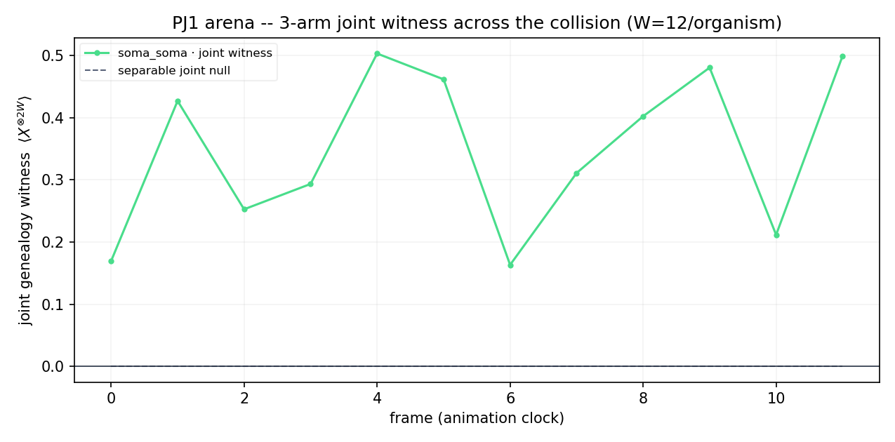

PJ1 opens the arena: two germ/soma organisms (each the PJ0 Weismann-barrier organism — a clean GHZ germ line + a mortal soma body) living in one environment, their bodies walking toward each other, meeting, interacting coherently, then measured to see whether a joint cross-lineage entanglement witness survives the collision. Ladder rungs 3–4; reproduction (rung 5) and L>2 (rung 6) are out of scope. This is the sim result (W=4/organism, track=5, 24 frames); the live W12/track6 Heron-r2 run is the developer's (Q2).
if(touch) react(). One
coherent rxx+ryy exchange sits at the shared track sites and does nothing until both bodies
have amplitude there — interaction emerges from co-location. All witness loss is real hardware
noise (no bath, no trace-out), so selective DD on the germ lines is allowed to fight it.
| arm | joint ⟨X⊗2W⟩ | A|B cut witness | sep. null | contact S (bits) | reading |
|---|---|---|---|---|---|
| none (pass_through) | +1.00 | +0.00 | ~0 | 0.00 (all frames) | product null — bodies glide through |
| soma_soma | +1.00 | +0.00 | ~0 | 0 → ~1.59 on overlap | bodies entangle; germ survives |
| germ_routed (A/B) | −0.39 | +0.00 | ~0 | ~1.6 | joint witness collapses |
1. The collision is emergent (AC-PJ1.4). In the none arm the contact entropy is
0.0 at every frame — the bodies pass through each other, no entanglement. In soma_soma
it is 0.0 at t=0 and rises to ~1.59 bits only as the bodies co-locate. Same build minus the
collision layer (verified structurally), yet a qualitatively different reaction — the "as if alive"
signature.
2. The germ genealogy survives the collision (AC-PJ1.2/AC-PJ1.3, I1). In both clean arms the
joint witness ⟨X⊗2W⟩ = +1.00 and the separable null sits at ~0: each lineage stays fully
quantum-alive through the encounter, because soma_soma couples bodies only and never
touches a germ qubit.
3. The Weismann barrier is the mechanism, cross-organism (AC-PJ1.5). Route the same
collision exchange through a germ qubit (germ_routed) and the joint witness collapses from
+1.00 to −0.39. Coupling the body to the gene line is what kills the joint genealogy — the PJ0 diagnosis,
now proven across two organisms.

The headline output is the wave-bars demo (index.html), rendered from this banked run: two organisms' bodies as travelling position bars, additive-overlap flare on contact, the live genealogy witness meter (green survives / red collapses) and the contact meter, scrubbable through the real measured frames, with an arm toggle.
python code/pj_qalife.py --arena --selftest ·
python code/pj1_run_arena.py --width 4 --track 5 --frames 24 ·
python analysis/pj1_render.py. Live: developer runs
python code/pj1_run_arena.py --backend <heron> --width 12 --track 6 --frames 6.